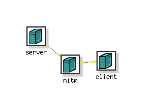

OverviewThis exercise lets students practice their understanding of encryption, decryption and attacks on cryptographic protocols. Students will be divided into 3-4 person teams. Each team will play the defender role (Blue team) for their own system and the attacker role (Red team) for another team's system. Each network in the exercise will consist of three machines - a server and a client machine under the control of the Blue Team and a mitm machine, sitting on the path from the client to the server, under the control of the Red Team. The image below shows a sample network in DETERLab.  Blue Team TasksDevelop a client and a server in DETERLab that talk between themselves using custom encryption/decryption. In the exercise you will be tasked to use one of the following crypto schemes:
Assumptions and RequirementsAssume that you are encrypting messages byte by byte. You MUST write all the code yourself. You are not allowed to use crypto libraries in the OS nor to copy code from online sources, but you can read the code from online sources and use the ideas from it to write your own code. You can assume that your messages will be in spoken English. They will be up to 100 characters long and will have only lower case letters, punctuation marks (.,!? no quotes) and spaces. The teacher will supply the messages to each team at the beginning of the exercise. There will be total of 10 unique messages to send, and they can be repeated multiple times during the exercise. The client reads messages from a file, supplied by the teacher and sends a message to the server once per minute. The message file contains one message per line. The file will contain enough message lines for the duration of the exercise (e.g., 60 lines for 60 minute exercise). The client prepends each message by a sequence number, before sending it to the server. You can choose how the sequence number changes and whether it is encrypted or not. The server prints each received message to a file called messages.txt upon receipt. You MUST encrypt each message using the same approach, i.e. you cannot change crypto scheme on the fly, unless it is broken by the Red Team and you are fixing vulnerabilities. You can change the encryption key any time, but the change must be automated, i.e. it needs to happen at a given time, or upon sending a given number of messages, or upon some other trigger, and must not involve any human intervention. MilestonesHere are some milestones that your team must reach BEFORE the exercise.
Red Team TasksThe goal of the Red Team is to break encryption and obtain secret messages and/or decryption key. Since you don't know which crypto scheme the Blue Team will be using you need to develop analysis approaches for each listed scheme.Assumptions and RequirementsYou MUST write all the code yourself. You are not allowed to use crypto libraries in the OS nor to copy code from online sources, but you can read the code from online sources and use the ideas from it to write your own code. You can assume that your router (mitm node) sits in between the client and the server. You can observe message exchanges but you are not allowed to perform any man-in-the-middle attacks, except sniffing the traffic. You must be able to read and analyze binary code, i.e., you must be able to work with non-printable characters. MilestonesHere are some milestones that your team must reach BEFORE the exercise.
ScoringThe Blue Team receives a point for each message they send to the server that is not broken by the Red Team. The Red Team receives a point for each message they break. The Red Team proves that it broke the message by printing it into a file. We can then compare this file with the server's output file. These two files need to include sequence numbers along with the message content.Exercise DynamicsTeams will need to simultaneously act as Blue Team and Red Team throughout the 2h exercise. We will then have a 10 min break followed by a post-mortem discussion and selection of a winning team.GradingEach team member will be graded based on their contribution to the team effort, not based on the team's performance. After the exercise each team member will submit a report containing the list of contributions they made to the team effort - e.g., modules that they coded, testing and setup they performed, etc. All team members must sign each report. Reports will be delivered to the instructor in class onUseful LinksYou can use any programming language you like for any part of your assignment.
|